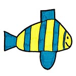

- 


I want to introduce you to Eytan, the artist, because he is a very special young man and knowing about him will make his story and his drawings more special as well.
Eytan is now 30 years old and has always had a gift for music and drawing. Although he has autism, he plays the piano really well and he draws with his own unique style that gives us a glimpse of the purity and happiness in his heart.
Eytan has been hired by our local school district to do weekly sing alongs with each of their 12 pre-school classes. He is also hired by a local church to play for their preschool program and to play a more sophisticated song list for periodic senior citizen luncheons that they sponsor.
Eytan has impacted the future of so many people who have come in contact with him. There are many great special ed teachers and therapists today who made the decision to go into their professions because they were inspired and intrigued by Eytan. He has certainly been one of my best teachers in life and now, through EytanArt and sharing his drawings by putting them on T-shirts, he can impact so many more people. By pairing Eytan’s drawings with messages that his life has inspired me (his mom) to share, we really hope that we have something here that can make a positive difference for people.
You can see all of his designs and you can learn more about customizing a shirt with your school, club or organization’s name on it and how you can use these as a fundraising tool.
On the site, in our newsletters and in the articles I post on the site’s blog – On A Better Note, you’ll learn more details about how, inspite of having autism, Eytan is doing many great things in our community using his strengths – music and art. You’ll also benefit from the life lessons we’ve learned by having Eytan in our lives.
This site is not just for people who live with, work with or are on the autism spectrum. It is for anyone who ever felt different, misunderstood or not accepted for who they are and it’s for those who care about making a difference. We welcome you to EytanArt, where we hope to help people be more positive and accepting and to live on a better note!